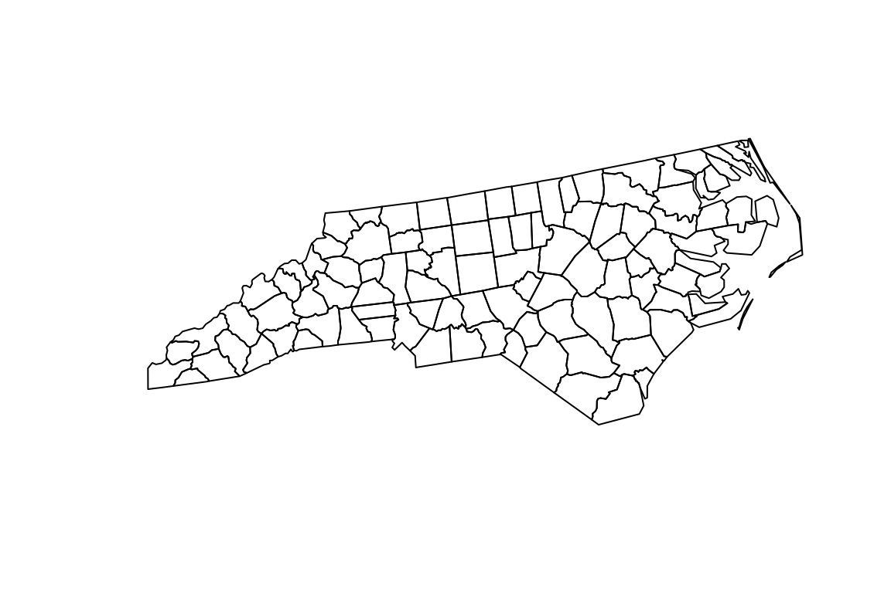
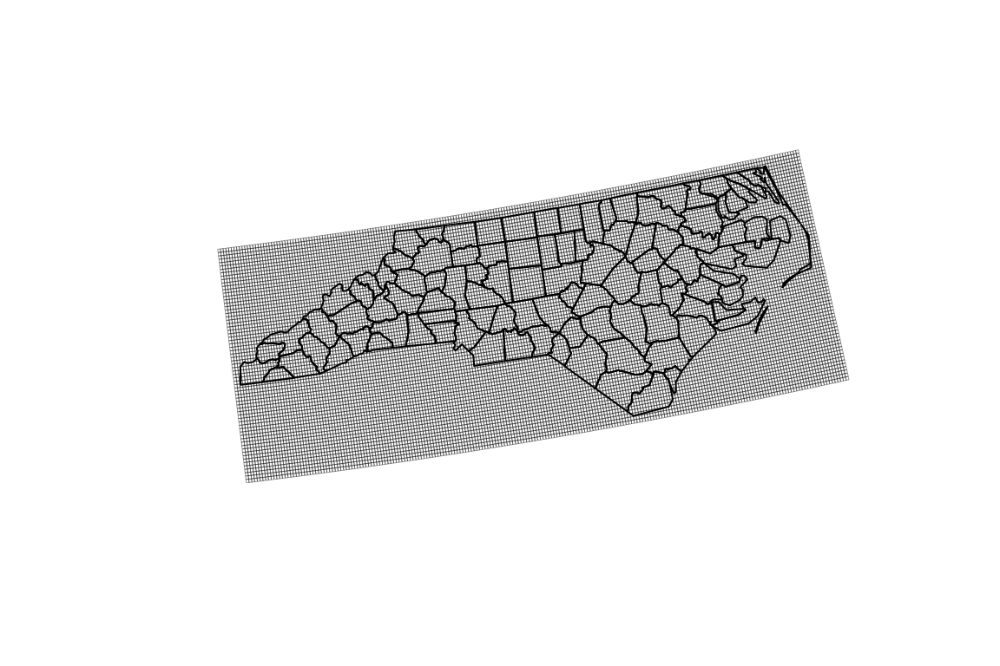
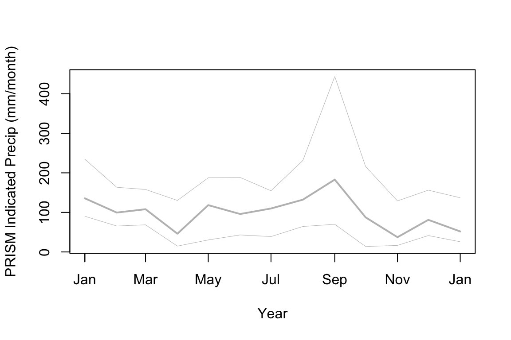
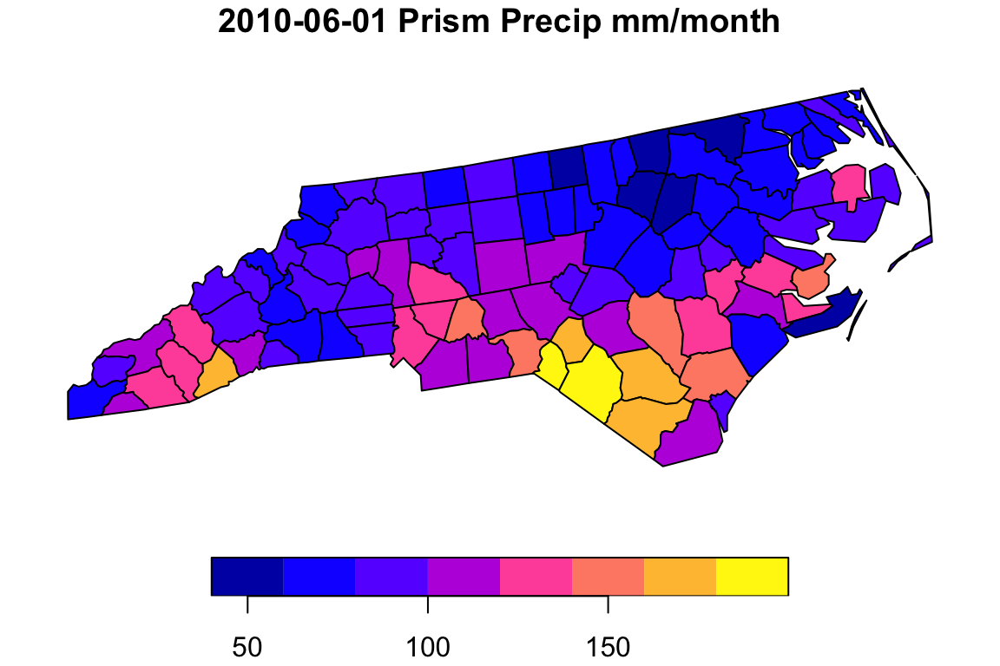
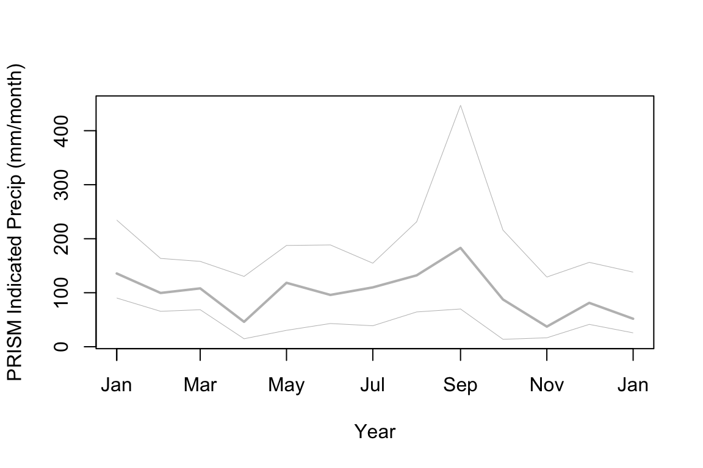
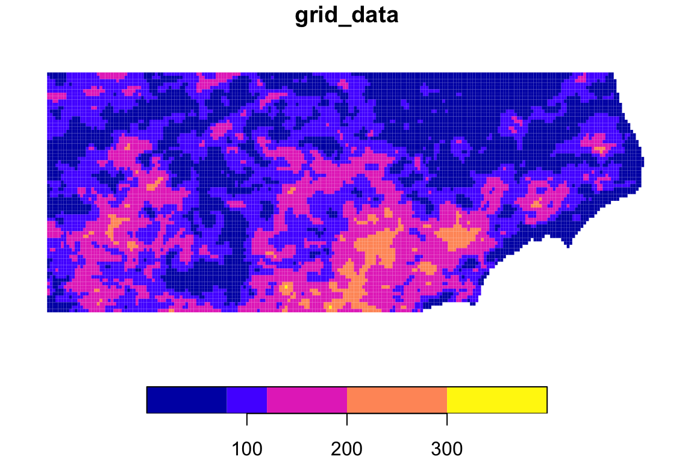
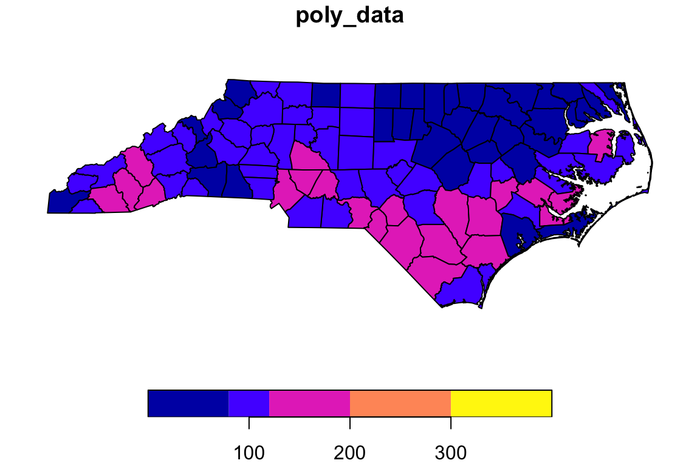
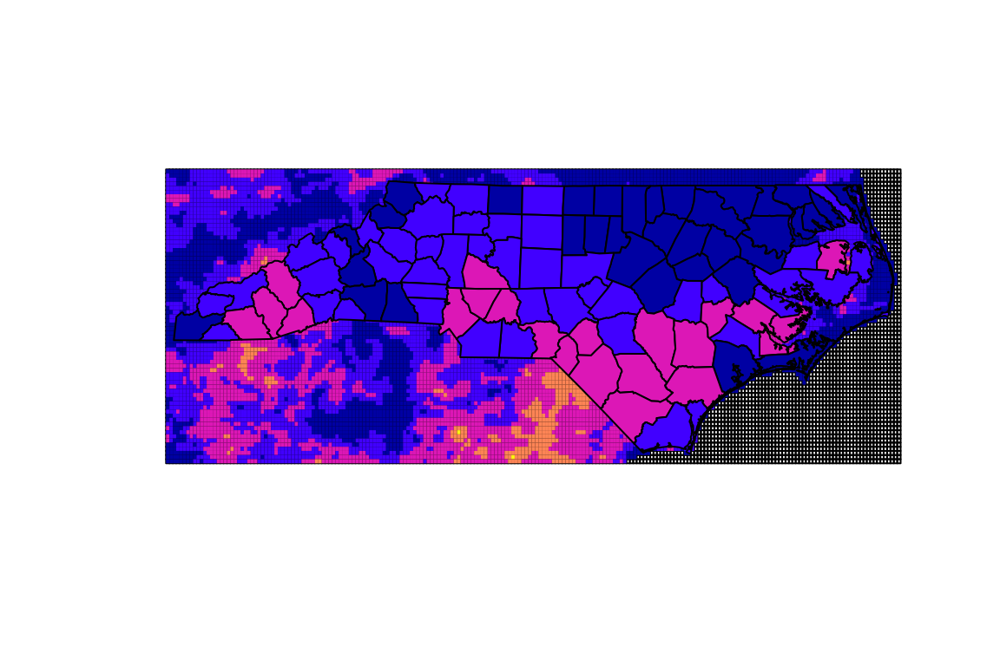

This is a complete demo showing a workflow implemented with intersectr. One of the primary goals of the package is to intersect gridded time series data with polygon geometries. For example, and as shown below, we can get time-series of area-weighed average monthly precipitation for counties in North Carolina from the PRISM source dataset that has a 4km - monthly resolution.
The example here uses a dataset from a THREDDS/OPeNDAP data server. Local NetCDF files can also be used but may require special handling if files are broken up through time.
The ncmeta package provides most of the NetCDF metadata handling and will work for either remote OPeNDAP hosted data or local NetCDF data. Below, we get a list of variables then find the coordinate variables for a selected variable.
nc_file <- "https://cida.usgs.gov/thredds/dodsC/prism_v2"
(nc_var <- ncmeta::nc_vars(nc_file))
#> # A tibble: 7 x 5
#> id name type ndims natts
#> <dbl> <chr> <chr> <dbl> <dbl>
#> 1 0 lon NC_FLOAT 1 2
#> 2 1 lat NC_FLOAT 1 2
#> 3 2 time NC_FLOAT 1 4
#> 4 3 time_bnds NC_FLOAT 2 2
#> 5 4 ppt NC_INT 3 6
#> 6 5 tmx NC_SHORT 3 6
#> 7 6 tmn NC_SHORT 3 6
variable_name <- "ppt"
(nc_coord_vars <- ncmeta::nc_coord_var(nc_file, variable_name))
#> # A tibble: 1 x 5
#> variable X Y Z T
#> <chr> <chr> <chr> <chr> <chr>
#> 1 ppt lon lat <NA> timeWe’ll use the sample polygon provided by the sf package as our geometry. The EPSG:5070 projection is a reasonable equal area projection for work in the Conterminous US.
(geom <- sf::st_transform(sf::read_sf(system.file("shape/nc.shp",
package = "sf")),
"+init=epsg:5070"))
#> Simple feature collection with 100 features and 14 fields
#> geometry type: MULTIPOLYGON
#> dimension: XY
#> bbox: xmin: 1054293 ymin: 1348025 xmax: 1833499 ymax: 1689236
#> epsg (SRID): 5070
#> proj4string: +proj=aea +lat_1=29.5 +lat_2=45.5 +lat_0=23 +lon_0=-96 +x_0=0 +y_0=0 +ellps=GRS80 +towgs84=0,0,0,0,0,0,0 +units=m +no_defs
#> # A tibble: 100 x 15
#> AREA PERIMETER CNTY_ CNTY_ID NAME FIPS FIPSNO CRESS_ID BIR74 SID74
#> <dbl> <dbl> <dbl> <dbl> <chr> <chr> <dbl> <int> <dbl> <dbl>
#> 1 0.114 1.44 1825 1825 Ashe 37009 37009 5 1091 1
#> 2 0.061 1.23 1827 1827 Alle… 37005 37005 3 487 0
#> 3 0.143 1.63 1828 1828 Surry 37171 37171 86 3188 5
#> 4 0.07 2.97 1831 1831 Curr… 37053 37053 27 508 1
#> 5 0.153 2.21 1832 1832 Nort… 37131 37131 66 1421 9
#> 6 0.097 1.67 1833 1833 Hert… 37091 37091 46 1452 7
#> 7 0.062 1.55 1834 1834 Camd… 37029 37029 15 286 0
#> 8 0.091 1.28 1835 1835 Gates 37073 37073 37 420 0
#> 9 0.118 1.42 1836 1836 Warr… 37185 37185 93 968 4
#> 10 0.124 1.43 1837 1837 Stok… 37169 37169 85 1612 1
#> # ... with 90 more rows, and 5 more variables: NWBIR74 <dbl>, BIR79 <dbl>,
#> # SID79 <dbl>, NWBIR79 <dbl>, geometry <MULTIPOLYGON [m]>
plot(sf::st_geometry(geom))
Now we can create cell geometry for the grid we are going to intersect with our county geometry. A function from ncmeta helps figure out the right proj4 string from our NetCDF file.
While very small, some of the row coordinates spacings are big enough to be interpreted as irregular in the create_cell_geometry function. We can even them out with a regular sequence.
The create_cell_geometry function generates an sf data.frame representing each cell from the dataset as a polygon with a unique id.
(nc_prj <- ncmeta::nc_gm_to_prj(ncmeta::nc_grid_mapping_atts(nc_file)))
#> Warning in nc_grid_mapping_atts.data.frame(nc_atts(x), data_variable): No variables with a grid mapping found.
#> Defaulting to WGS84 Lon/Lat
#> [1] "+proj=longlat +a=6378137 +f=0.00335281066474748 +pm=0 +no_defs"
# Small diffs
nc <- RNetCDF::open.nc(nc_file)
col_coords <- RNetCDF::var.get.nc(nc, nc_coord_vars$X, unpack = TRUE)
max(diff(diff(col_coords)))
#> [1] 0.000007629395
col_coords <- seq(from = col_coords[1],
to = col_coords[length(col_coords)],
along.with = col_coords)
max(diff(diff(col_coords)))
#> [1] 0.00000000000001421085
row_coords <- RNetCDF::var.get.nc(nc, nc_coord_vars$Y, unpack = TRUE)
max(diff(diff(row_coords)))
#> [1] 0.000003814697
row_coords <- seq(from = row_coords[1],
to = row_coords[length(row_coords)],
along.with = row_coords)
max(diff(diff(col_coords)))
#> [1] 0.00000000000001421085
(cell_geometry <-
create_cell_geometry(col_coords = col_coords,
row_coords = row_coords,
prj = nc_prj,
geom = geom,
buffer_dist = 10000))
#> although coordinates are longitude/latitude, st_contains assumes that they are planar
#> Simple feature collection with 15042 features and 3 fields
#> Attribute-geometry relationship: 3 constant, 0 aggregate, 0 identity
#> geometry type: POLYGON
#> dimension: XY
#> bbox: xmin: -84.41667 ymin: 33.79167 xmax: -75.33334 ymax: 36.66667
#> epsg (SRID): 4326
#> proj4string: +proj=longlat +ellps=WGS84 +no_defs
#> First 10 features:
#> grid_ids col_ind row_ind geometry
#> 1 1 976 320 POLYGON ((-84.41667 36.6666...
#> 2 70 977 320 POLYGON ((-84.375 36.66667,...
#> 3 139 978 320 POLYGON ((-84.33334 36.6666...
#> 4 208 979 320 POLYGON ((-84.29167 36.6666...
#> 5 277 980 320 POLYGON ((-84.25 36.66667, ...
#> 6 346 981 320 POLYGON ((-84.20834 36.6666...
#> 7 415 982 320 POLYGON ((-84.16667 36.6666...
#> 8 484 983 320 POLYGON ((-84.125 36.66667,...
#> 9 553 984 320 POLYGON ((-84.08334 36.6666...
#> 10 622 985 320 POLYGON ((-84.04167 36.6666...
plot(sf::st_geometry(sf::st_transform(cell_geometry,
sf::st_crs(geom))), lwd = 0.2)
plot(sf::st_geometry(geom), add = TRUE)
With our input geometries ready, we can run the area_weights and execute_intersection functions.
The area weights function provides weights for area-weighted statistics. The weight column of the output can be used in an area-weighted-mean calculation where mean of the data source cells is desired for each of the county polygons.
data_source_cells <- sf::st_sf(dplyr::select(cell_geometry, grid_ids))
target_polygons <- sf::st_sf(dplyr::select(geom, FIPS))
sf::st_agr(data_source_cells) <- "constant"
sf::st_agr(target_polygons) <- "constant"
area_weights <- calculate_area_intersection_weights(
data_source_cells,
target_polygons)Now we have everything we need to actually run the intersection. This function iterates through time steps, applying the intersection weights for each time step.
start_date <- "2010-01-01 00:00:00"
end_date <- "2011-01-01 00:00:00"
intersected <- execute_intersection(nc_file = nc_file,
variable_name = variable_name,
intersection_weights = area_weights,
cell_geometry = cell_geometry,
x_var = nc_coord_vars$X,
y_var = nc_coord_vars$Y,
t_var = nc_coord_vars$T,
start_datetime = start_date,
end_datetime = end_date)
# Need to fix in execute_intersection
intersected[, 2:ncol(intersected)] <- intersected[, 2:ncol(intersected)]
intersected_intersectr <- intersectedNow we can plot up some of the resulting data on a map or through time.
row <- which(as.character(intersected$time_stamp) == "2010-06-01")
geom_data <- dplyr::select(geom, FIPS) %>%
dplyr::left_join(data.frame(FIPS = names(intersected)[2:ncol(intersected)],
poly_data = as.numeric(intersected[row, 2:ncol(intersected)]),
stringsAsFactors = FALSE),
by = "FIPS")
plot(geom_data["poly_data"],
main = paste(intersected[row, 1], "Prism Precip mm/month"))plot(intersected$time_stamp, seq(min(intersected[, 2:ncol(intersected)]),
max(intersected[, 2:ncol(intersected)]),
length.out = nrow(intersected)), col = NA,
xlab = "Year", ylab = "PRISM Indicated Precip (mm/month)")
lines(intersected$time_stamp, apply(intersected[, 2:ncol(intersected)], 1, mean), lwd = 2, col = "grey")
lines(intersected$time_stamp, apply(intersected[, 2:ncol(intersected)], 1, max), lwd = .5, col = "grey")
lines(intersected$time_stamp, apply(intersected[, 2:ncol(intersected)], 1, min), lwd = .5, col = "grey")
library(geoknife)
#>
#> Attaching package: 'geoknife'
#> The following object is masked from 'package:stats':
#>
#> start
#> The following object is masked from 'package:graphics':
#>
#> title
#> The following object is masked from 'package:base':
#>
#> url
fabric <- webdata('prism')
times(fabric) <- c(start_date, end_date)
variables(fabric) <- "ppt"
stencil <- webgeom(geom = "sample:Counties", attribute = "FIPS")
values(stencil) <- geom$FIPS
job <- geoknife(stencil, fabric, wait = TRUE)
intersected <- result(job)
intersected <- intersected[, 1:(ncol(intersected) - 2)]
names(intersected)[1] <- "time_stamp"
intersected_geoknife <- intersectedrow <- which(as.character(intersected$time_stamp) == "2010-06-01")
geom_data <- dplyr::select(geom, FIPS) %>%
dplyr::left_join(data.frame(FIPS = names(intersected)[2:ncol(intersected)],
poly_data = as.numeric(intersected[row, 2:ncol(intersected)]),
stringsAsFactors = FALSE),
by = "FIPS")
plot(geom_data["poly_data"],
main = paste(intersected[row, 1], "Prism Precip mm/month"))
plot(intersected$time_stamp, seq(min(intersected[, 2:ncol(intersected)]),
max(intersected[, 2:ncol(intersected)]),
length.out = nrow(intersected)), col = NA,
xlab = "Year", ylab = "PRISM Indicated Precip (mm/month)")
lines(intersected$time_stamp, apply(intersected[, 2:ncol(intersected)], 1, mean), lwd = 2, col = "grey")
lines(intersected$time_stamp, apply(intersected[, 2:ncol(intersected)], 1, max), lwd = .5, col = "grey")
lines(intersected$time_stamp, apply(intersected[, 2:ncol(intersected)], 1, min), lwd = .5, col = "grey")
col_inds <- seq(min(cell_geometry$col_ind), max(cell_geometry$col_ind), 1)
row_inds <- seq(min(cell_geometry$row_ind), max(cell_geometry$row_ind), 1)
ids <- intersectr:::get_ids(length(col_inds), length(row_inds))
dates <- RNetCDF::var.get.nc(nc, "time", unpack = TRUE)
date_units <- RNetCDF::att.get.nc(nc, "time", "units")
dates <- RNetCDF::utcal.nc(date_units, dates, type = "c")
date_ind <- which(as.character(dates) == "2010-06-01")
grid_data <- RNetCDF::var.get.nc(nc, variable_name,
start = c(min(col_inds), min(row_inds), date_ind),
count = c(length(col_inds), length(row_inds), 1),
unpack = TRUE)
grid_data <- data.frame(grid_data = matrix(grid_data,
ncol = 1,
byrow = TRUE),
grid_ids = matrix(ids, ncol = 1))
grid_data$grid_data[grid_data$grid_data < 0] <- NA
grid_data <- dplyr::left_join(cell_geometry, grid_data, by = "grid_ids")
intersected <- intersected_intersectr
row <- which(as.character(intersected$time_stamp) == "2010-06-01")
geom_data <- dplyr::select(geom, FIPS) %>%
dplyr::left_join(data.frame(FIPS = names(intersected)[2:ncol(intersected)],
poly_data = as.numeric(intersected[row, 2:ncol(intersected)]),
stringsAsFactors = FALSE),
by = "FIPS")
geom_data <- sf::st_transform(geom_data, sf::st_crs(grid_data))
breaks <- c(0, 80, 120, 200, 300, 400)
plot(grid_data["grid_data"], border = NA, breaks = breaks)

plot(grid_data$geometry)
plot(grid_data["grid_data"], border = NA, breaks = breaks, add = TRUE)
plot(geom_data["poly_data"], breaks = breaks, add = TRUE)
row_gk <- which(as.character(intersected_geoknife$time_stamp) == "2010-06-01")
row_ir <- which(as.character(intersected_intersectr$time_stamp) == "2010-06-01")
diffs <- (intersected_intersectr[row_ir, 2:ncol(intersected_intersectr)] -
intersected_geoknife[row_gk, 2:ncol(intersected_geoknife)]) /
((intersected_intersectr[row_ir, 2:ncol(intersected_intersectr)] +
intersected_geoknife[row_gk, 2:ncol(intersected_geoknife)]) / 2)
max(as.numeric(diffs[1,]))
#> [1] 0.02787123
mean(as.numeric(diffs[1,]))
#> [1] 0.001115154